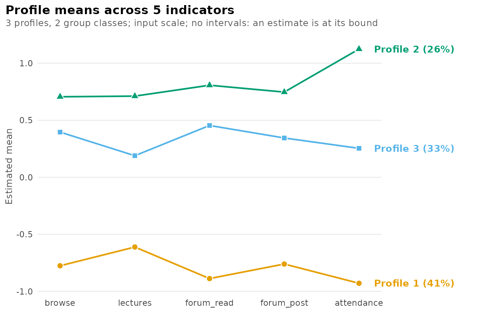
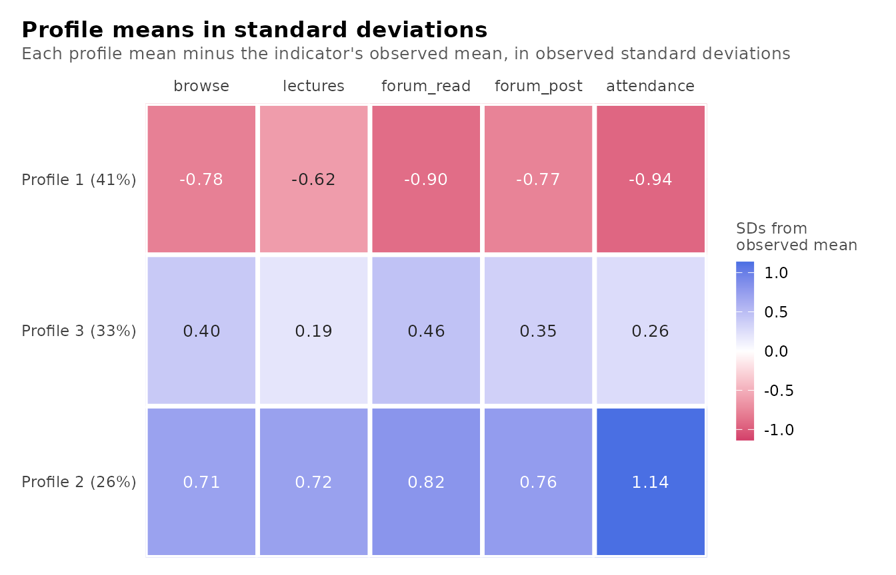
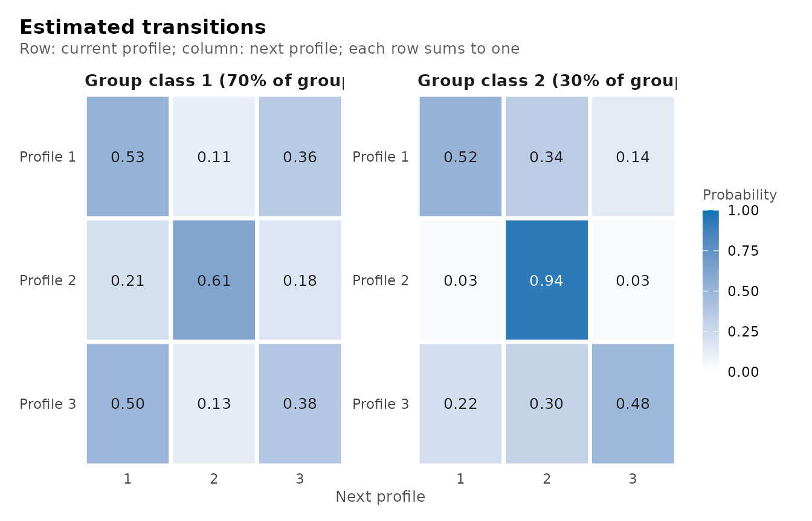
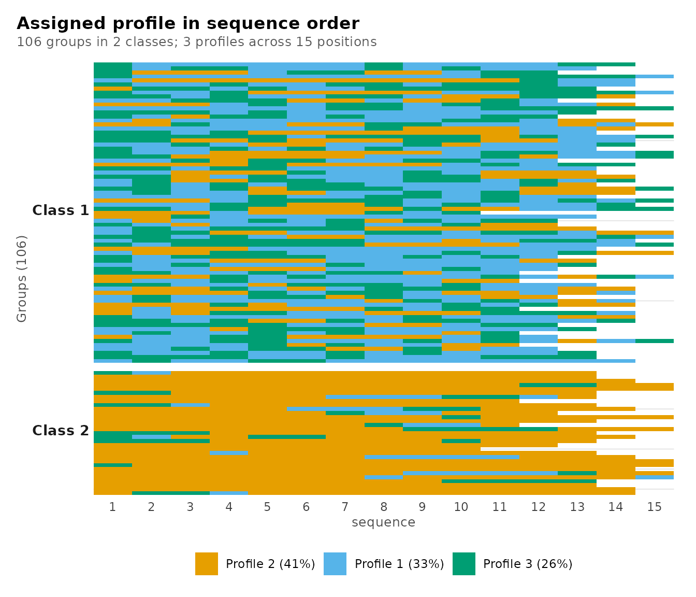
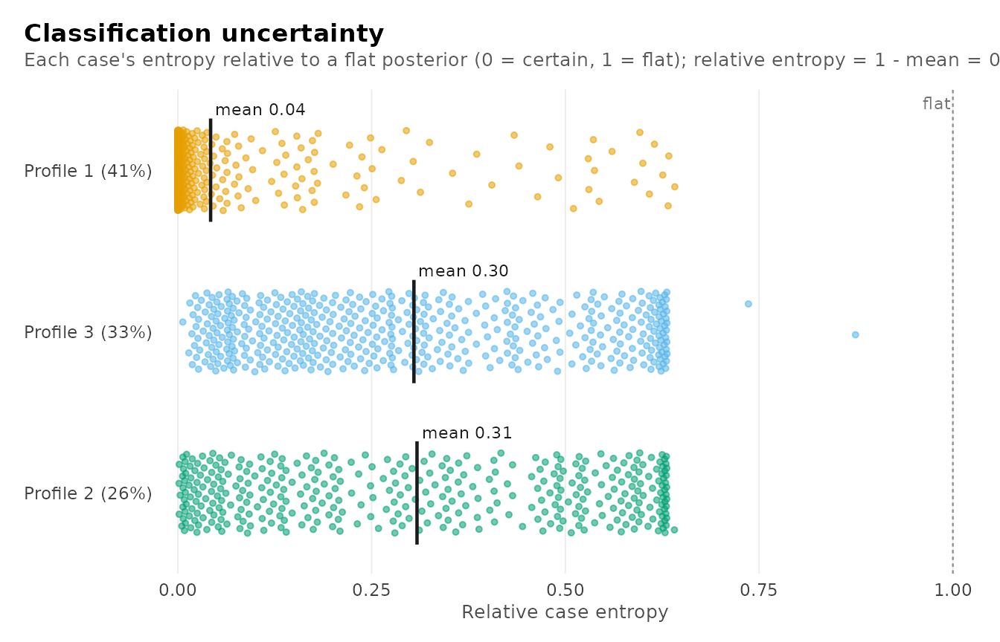
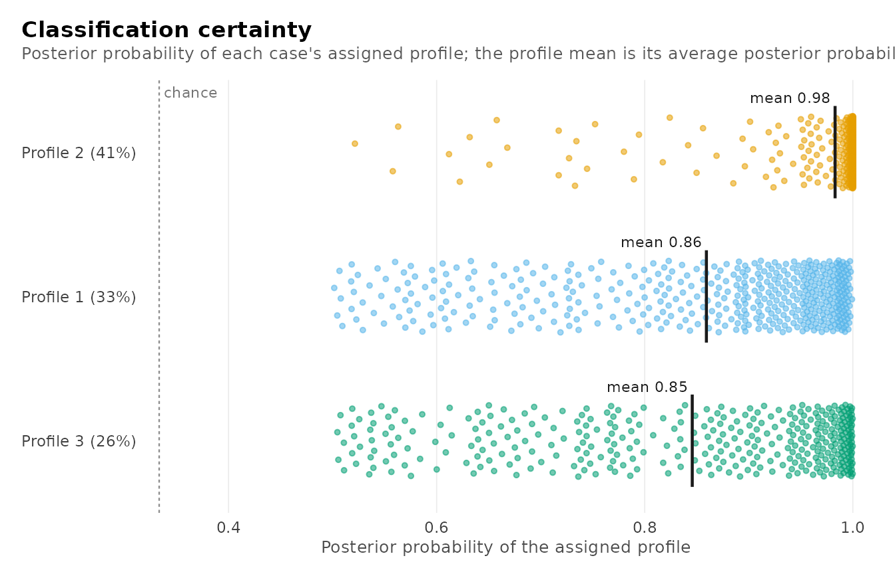
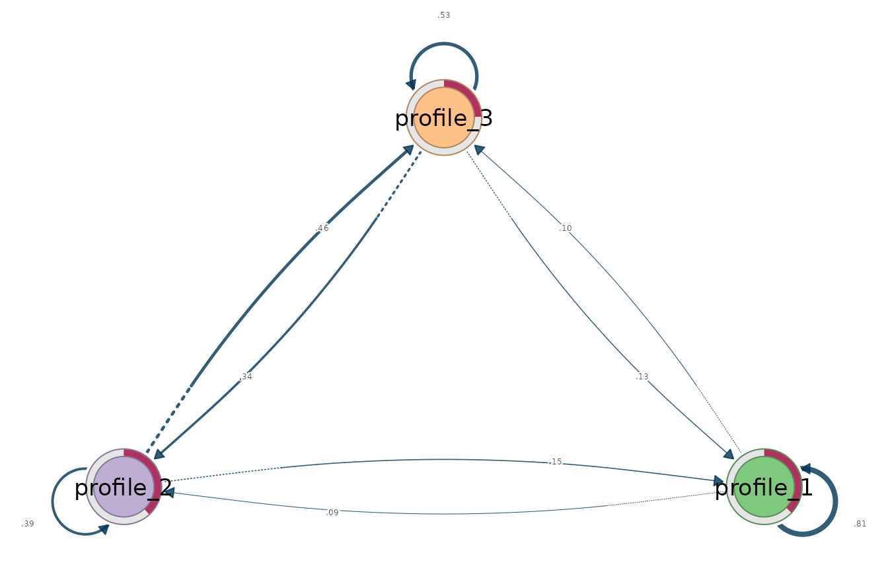
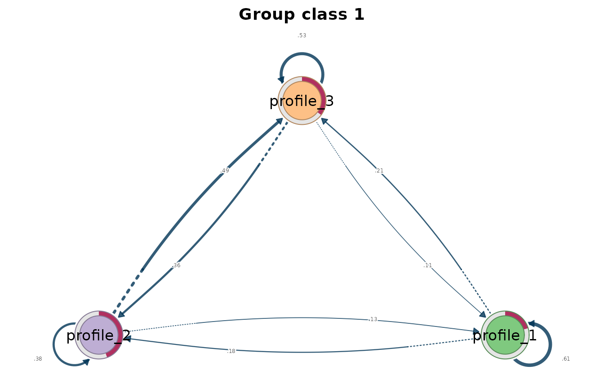
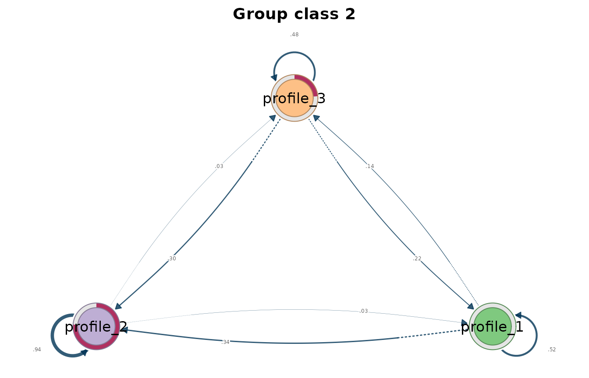

Latent transition analysis
Written by Mohammed Saqr and Sonsoles López-Pernas
Source:vignettes/articles/lta.Rmd
lta.RmdLatent transition analysis (LTA) estimates latent states at successive occasions and the probabilities of transitions between them. In the default model, profiles have a common measurement definition across occasions. With latent group classes, initial-state probabilities and transition matrices differ by class, representing heterogeneity in longitudinal patterns.
Data
course_engagement is simulated and has one row per
course enrolment: 1,422 enrolments from 106 students. lta()
needs three kinds of variables.
-
Group:
studentidentifies whose occasions belong together. -
Occasion order:
sequenceis the position of each course in the student’s history. Students can have different numbers of occasions. -
Indicators: five activity measures
(
browse,lectures,forum_read,forum_post,attendance), each standardized within course, so 0 is the course average.
Fit
The lta() function requires indicators
(vars), a group identifier (id), and occasion
order (time). The arguments n_profiles and
n_group_classes specify the latent structure;
n_starts and seed control repeated estimation
from reproducible starting values.
moves <- lta(course_engagement,
vars = c("browse", "lectures", "forum_read", "forum_post",
"attendance"),
id = "student", time = "sequence",
n_profiles = 3, n_group_classes = 2, n_starts = 3, seed = 1)
moves
#> Latent transition model: 3 profiles, 2 group classes
#> 1422 observations in 106 groups, up to 15 occasions (unbalanced, observed grid)
#> Log likelihood: -8242.966906; 47 parameters; BIC (groups): 16705.1155
#> Converged: TRUE after 36 iterations; best of 3 starts
#> Smallest standardized Gaussian eigenvalue: 0.2092 (profiles, profile_1); Gaussian mass: 470.7; weight effective n: 589.7.
#>
#> Class sizes profile_1 33.1% (471) profile_2 40.7% (579) profile_3 26.2% (372)
#> Group classes group_class_1 30.0% (32) group_class_2 70.0% (74)
#>
#> Means
#> indicator profile_1 profile_2 profile_3
#> browse 0.396 -0.776 0.706
#> lectures 0.189 -0.612 0.712
#> forum_read 0.454 -0.888 0.807
#> forum_post 0.345 -0.761 0.747
#> attendance 0.254 -0.929 1.124
#>
#> Variances and standard errors: get_results(x, "profiles").
#> Every other table: get_results(x, what = ), or get_results(x, "all").The "starts" table reports the log likelihood reached by
each start. Replication of the selected likelihood supports numerical
stability but does not establish that the global maximum has been
found.
get_results(moves, "starts")
#> start log_likelihood converged iterations error
#> 1 1 -8243 TRUE 36 <NA>
#> 2 2 -8243 TRUE 48 <NA>
#> 3 3 -8243 TRUE 64 <NA>Profiles
The profile plot displays estimated indicator means and the estimated
share of occasions in each profile. For a transition model,
plot() without an explicit view instead displays transition
matrices.
plot_profiles(moves)
The profile heatmap expresses each mean in standard deviations from the indicator’s overall mean, facilitating comparison across indicators.
plot_profiles(moves, what = "heatmap")
Starting probabilities
The "initial" table reports initial profile
probabilities (probability), profile prevalence across
occasions (prevalence), and estimated group-class
proportions (group_class_probability).
get_results(moves, "initial")
#> group_class profile probability prevalence group_class_probability
#> 1 1 1 1.00e-10 0.0841 0.3
#> 2 1 2 7.62e-01 0.8193 0.3
#> 3 1 3 2.38e-01 0.0965 0.3
#> 4 2 1 3.53e-01 0.4372 0.7
#> 5 2 2 2.04e-01 0.2297 0.7
#> 6 2 3 4.44e-01 0.3330 0.7Transitions
The "transitions" table reports the probability of
moving from state from to state to at the next
occasion. Probabilities sum to one within each origin state and group
class. The column stable identifies transitions that retain
the same state; expected_count reports the posterior
expected transition count. A row with estimated = FALSE
lacks information for estimating that transition distribution.
get_results(moves, "transitions")
#> group_class from to probability expected_count stable estimated group_class_probability
#> 1 1 1 1 0.5202 17.54 TRUE TRUE 0.3
#> 2 1 1 2 0.3394 11.44 FALSE TRUE 0.3
#> 3 1 1 3 0.1405 4.74 FALSE TRUE 0.3
#> 4 1 2 1 0.0302 9.75 FALSE TRUE 0.3
#> 5 1 2 2 0.9386 303.22 TRUE TRUE 0.3
#> 6 1 2 3 0.0313 10.10 FALSE TRUE 0.3
#> 7 1 3 1 0.2221 8.71 FALSE TRUE 0.3
#> 8 1 3 2 0.2961 11.61 FALSE TRUE 0.3
#> 9 1 3 3 0.4818 18.90 TRUE TRUE 0.3
#> 10 2 1 1 0.5256 214.24 TRUE TRUE 0.7
#> 11 2 1 2 0.1141 46.50 FALSE TRUE 0.7
#> 12 2 1 3 0.3603 146.88 FALSE TRUE 0.7
#> 13 2 2 1 0.2099 43.69 FALSE TRUE 0.7
#> 14 2 2 2 0.6146 127.95 TRUE TRUE 0.7
#> 15 2 2 3 0.1756 36.55 FALSE TRUE 0.7
#> 16 2 3 1 0.4951 150.59 FALSE TRUE 0.7
#> 17 2 3 2 0.1277 38.85 FALSE TRUE 0.7
#> 18 2 3 3 0.3772 114.74 TRUE TRUE 0.7The transition plot displays one matrix per group class, with current profiles in rows and next-occasion profiles in columns.
plot_transitions(moves)
Sequences
The sequence plot displays one row per group, coloured by the most probable profile at each occasion. These modal assignments summarize the fitted sequences but omit classification uncertainty.
plot_sequences(moves)
Classification
The "entropy" table reports relative entropy for
occasions and groups. With more than one class, a value of 1 indicates
certain posterior membership; 0 indicates equal posterior probabilities
across classes for every case. Entropy summarizes classification
separation under the fitted model.
get_results(moves, "entropy")
#> level n_classes n_units entropy_sum relative_entropy
#> 1 individuals 3 1422 309.4 0.802
#> 2 groups 2 106 16.3 0.778Diagnostic plots display per-case uncertainty within each profile
(what = "entropy") and posterior probabilities of assigned
profiles (what = "posteriors").
plot_diagnostics(moves, what = "entropy")
plot_diagnostics(moves, what = "posteriors")
Transition networks
The estimated transitions can be represented as networks.
get_tna() returns a network pooled across group classes;
get_group_tna() returns one network per class. Both
functions produce tna objects that can
be displayed with plot().

plot(get_group_tna(moves))

Beyond homogeneous transitions
Several extensions permit alternative specifications of temporal dependence and measurement:
-
transition_covariateslets covariates shift the transition probabilities: the log odds of moving to each other profile rather than staying. A covariate may change over occasions. -
initial_covariateslets covariates shift the starting profile. -
transitions = "occasion"estimates a separate transition matrix for each move. -
measurement = "occasion"lets the profiles’ means and variances differ by occasion. -
order = 2makes the next profile depend on the two previous ones. -
mover_stayer = TRUEadds a class of groups that never change profile.
enumerate_classes(..., time = "sequence") compares
numbers of profiles and group classes, and bootstrap_lrt()
tests a model against a nested one.
The following example examines whether previous_grade,
which varies across courses, is associated with transition
probabilities:
activity <- c("browse", "lectures", "forum_read", "forum_post", "attendance")
homogeneous <- lta(course_engagement, activity, "student", n_profiles = 2,
time = "sequence", seed = 1)
grade <- lta(course_engagement, activity, "student", n_profiles = 2,
time = "sequence", transition_covariates = "previous_grade",
seed = 1)
get_results(grade, "transition_coefficients")
#> group_class from to term estimate standard_error statistic p_value
#> 1 group_class_1 profile_1 profile_2 (Intercept) -1.8398 0.118 -15.566 1.25e-54
#> 2 group_class_1 profile_1 profile_2 previous_grade 0.0338 0.121 0.280 7.79e-01
#> 3 group_class_1 profile_2 profile_1 (Intercept) -1.4632 0.130 -11.256 2.17e-29
#> 4 group_class_1 profile_2 profile_1 previous_grade 0.0438 0.130 0.337 7.36e-01
#> conf_low conf_high odds_ratio estimated
#> 1 -2.071 -1.608 0.159 TRUE
#> 2 -0.203 0.270 1.034 TRUE
#> 3 -1.718 -1.208 0.231 TRUE
#> 4 -0.211 0.298 1.045 TRUEThe estimated odds ratios are close to one, and the confidence intervals for the log-odds coefficients include zero. These results provide limited evidence of an association between previous grade and transitions in this example; they do not establish the absence of an association. A second-order model, in which the next profile depends on the two previous states, can also be compared with the first-order specification using BIC:
second <- lta(course_engagement, activity, "student", n_profiles = 2,
time = "sequence", order = 2, seed = 1)
BIC(homogeneous, grade, second)
#> df BIC
#> homogeneous 23 16778
#> grade 25 16787
#> second 27 16786For these data, BIC is lower for the homogeneous first-order model than for either extension. Extended models provide transition and initial-state logit coefficients, with Wald standard errors when supported by the fitted model, and occasion-specific probability summaries.
Assumptions
- By default the next profile depends only on the current profile and the group class, and transition probabilities are the same at every occasion; the arguments above relax each of these.
- Profiles have the same definition at every occasion unless
measurement = "occasion". - Indicators are independent within a profile (the default diagonal
covariance;
covariance_model = "full"or a non-diagonalmodelrelaxes it).